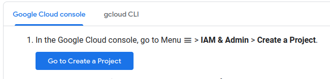
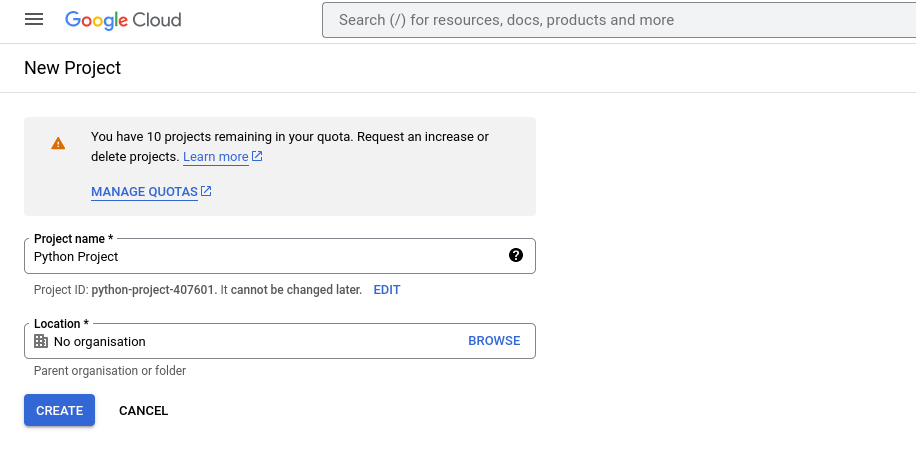
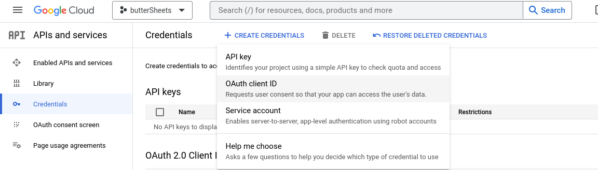
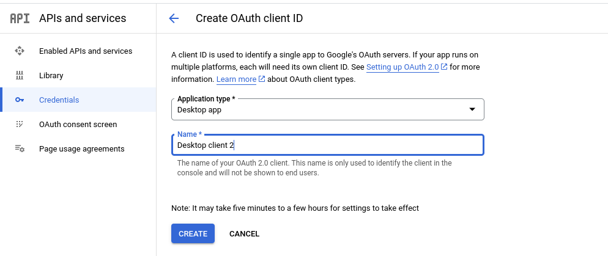
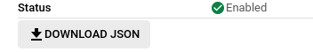
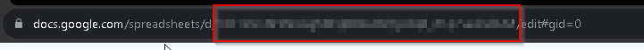

I would like to start by saying I am by no means a developer. I've been learning python over the last year, and to be honest up until about a month ago, i was convinced I had no idea how to program. I knew all the basics, I just never had any practical application I could apply programming to. That was until I started a recent project that involved generating, sorting and storing massive data sets. I had written the tool to generate the data, but now I have thousands of texts files sitting on my computer with no structure. Thats when I came across Google Sheets API and the lightbulb went off. I was going to build a tool to put all of this data into its own individual cell in a spreadsheet.All of that to say, through this proses I have learned a few things, mostly that Google Sheets API with python is pretty cool.
Set Up
Step 1: Authentication
There is a few things we do before we start, the first of which is setting up authentication. To access the sheet you will need to authenticate with your google account. For this we will need a file call credentials.json we can get that by creating a new google cloud project here.

Here we will create and name a project. This can be whatever you like.
After that we will click API and services and go to the credentials tab.

Now we can click create credentials
Again you can name this anything you like, just make sure it is a desktop app.
Now we download the json file and save it as credentials.json in the directory that we are working in.
After creating your Oauth client ID download and save it as credentials.json in the directory you will be working in.
Step 2: Requirements
We will also need to get the python modules to start interacting with the sheets. run te following command:
pip install --upgrade google-api-python-client google-auth-httplib2 google-auth-oauthlib
Code
We should have everything we need to start writing code. We will have to provide some information such as spreadsheet Id, were also going to want to implement code to generate a token so we don't have to authenticate every time.
from google.auth.transport.requests import Request
import os
from httplib2 import Credentials
from google.auth.transport.requests import Request
from google.oauth2.credentials import Credentials
from google_auth_oauthlib.flow import InstalledAppFlow
from googleapiclient.discovery import build
from googleapiclient.errors import HttpError
SPREADSHEET_ID = ''
SCOPES = ["https://www.googleapis.com/auth/spreadsheets"]
def auth():
credentials = None
if os.path.exists('token.json'):
credentials = Credentials.from_authorized_user_file('token.json', SCOPES)
if not credentials or not credentials.valid:
if credentials and credentials.expired and credentials.refresh_token:
credentials.refresh(Request())
else:
flow = InstalledAppFlow. from_client_secrets_file("credentials.json", SCOPES)
credentials = flow.run_local_server(port=0)
with open ("token.json", 'w') as token:
token.write(credentials.to_json())
return credentials
Here are all the imports we will need. We also have two variables, SCOPES and SPREADSHEET_ID we will set the spreadsheet id later. There is also a function defined called auth() which will handle authentication and the creation of the token.
The next step will be to make two functions. One will be for handling querying data the other will export the data to the google sheet.
def index(credentials, sheetName, startIndex, endIndex):
service = build('sheets', "v4", credentials=credentials)
sheets = service.spreadsheets()
result = sheets.values().get(spreadsheetId=SPREADSHEET_ID,
range=f"{sheetName}!{startIndex}:{endIndex}").execute()
values = result.get('values', [])
return values
def populate(cellNumber,sheets,letter,input):
service = build('sheets', "v4", credentials=credentials)
sheets = service.spreadsheets()
result = sheets.values().update(spreadsheetId=SPREADSHEET_ID,
range=f'Sheet1!{letter}{str(cellNumber)}',
valueInputOption='USER_ENTERED', body={'values': [[input]]}).execute()
def getCellNumber(credentials, SPREADSHEET_ID):
service = build('sheets', "v4", credentials=credentials)
sheets = service.spreadsheets()
result = sheets.values().get(spreadsheetId=SPREADSHEET_ID, range=f"Sheet1!A1:A500").execute()
values = result.get('values', [])
cellNumber = len(values) + 1
return cellNumber
We can now set the spreadsheet ID, which will be the sting in the url of the spreadsheet after /d/

credentials = auth()
cellNumber = getCellNumber(credentials, SPREADSHEET_ID)
populate(cellNumber,'Sheet1', 'A', "row 1")
populate(cellNumber,'Sheet1', 'B', "row 1, col 2")
If we check the sheet we should see the data that we just uploaded.
Now to get that data back into python we can use the index() function.
index(credentials, 'Sheet1', 'A1', 'B1')